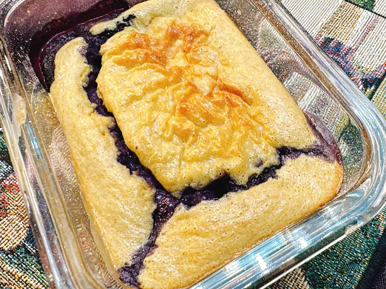

Blueberry Baked Oats Recipe

Description
Warm, fluffy, and naturally sweet — these blueberry baked oats offer a
cozy breakfast treat with bursts of juicy berries in every bite. Lightly
spiced with cinnamon and vanilla, they bake to a golden finish and paired
perfectly with a drizzle of honey or a splash of milk.
Ingredients
Note: these are ingredients for 1 serving
- 1 cup high-protein cottage cheese
- 4 large eggs
- 1 tablespoon agave syrup
- 2 tablespoons vanilla bean paste
- 1 cup quick oats
- 2 teaspoons baking powder
- 2 tablespoons sugar-free cheesecake pudding mix
- 1 cup blueberries, or as needed
Steps
-
Preheat the oven to 350 degrees F (180 degrees C).
Spray 4 (6 to 8 ounce) oven-proof glass dishes with cooking spray.
-
Meanwhile combine cottage cheese, eggs, agave syrup, vanilla, oats,
baking powder, and pudding mix in the jar of a high powered blender.
Blend on high for 1 minute. Divide batter evenly between prepared dishes.
Sprinkle blueberries on top.
-
Bake in the preheated oven until set, about 25 minutes.
Can also be found on here on AllRecipes
Return to Home